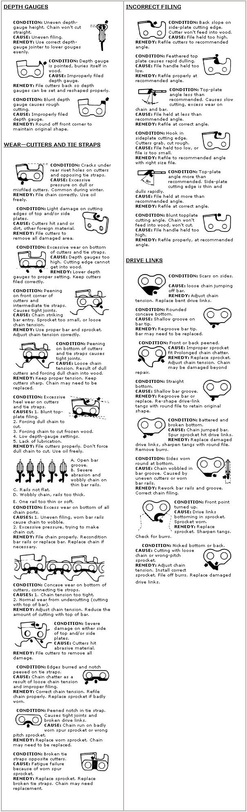
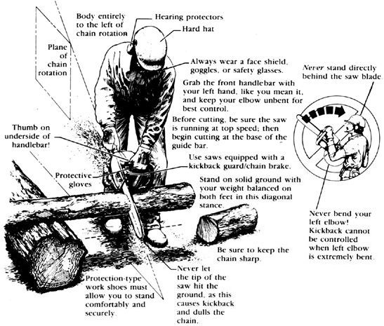

Wait! Before you head out to the woods with your chain saw this fall, inspect your chain.
Back in 1978 and '79, MOTHER published an extensive two-part excerpt (see issues 54 and 55) from Barnacle Parp's Chain Saw Guide. This well-illustrated, commonsense handbook quickly became the standard guide to selecting, using, and caring for those dangerous, but well-nigh indispensable, machines. All of our staff woodcutters who had copies of the book used them faithfully.
Then, recently, Parp's Guide went out of print . . . and our staff sawyers had to guard their copies faithfully. Well, we saw a situation that needed correcting, so we decided to republish the book ourselves. Not only that, we persuaded Walter Hall-the guide's author-to expand and update it. The result is Barnacle Parp's New Chain Saw Guide (copyright © Walter Hall, 288 pages, available for $12.95 plus $1.50 shipping and handling from Mother's Bookshelf, 105 Stoney Mountain Rd., Hendersonville, NC 28791). As you can see from the selections here, Parp's Guide is animportant aid for anyone who ever has need to pick up a chain saw.
Occasionally, in one of your periodic examinations of your chain, you might spot a problem with some part, such as a cutter. When you do, use the picture guide here to identify the problem and thus discover its probable cause and remedy.
But not all cutting problems are immediately apparent to the eye, especially if chain saws are new to you. It's impossible here to cover completely all the potential saw chain problems, but if you experience a performance problem, try to identify it from the following paragraphs.
Chain cuts crooked; cuts at an angle; engine drags: If your bar and sprocket are in good shape, these problems are caused by filing the cutters at different angles or by inconsistent filing pressure from tooth to tooth. A chain that is sharper or longer on one side will pull to that side. Refile to restore uniform cutters, and reset the depth gauges. Check bar rails and tang clearance.
Chain dulls quickly: The most common cause of this problem is thin or feathered cutting edges caused by holding the file handle too low or by pressing down too hard on the file. A misaligned, worn, or wrong-pitch sprocket will also cause the chain to wear or dull quickly. Check the sprocket for wear and to be sure it's the correct size. Refile cutters using lighter strokes with the file held level or at a slighter angle, no more than 5° from horizontal. Also check and lower the depth gauges, and check the chain tension often.
Chain has been filed but won't cut; powders wood instead of chipping it: Blunt cutting edges are produced by holding the file too high on the face of the tooth or by holding the handle too high. Refile with a clamp-on file guide.
Chain binds; requires pressure to cut: Incorrect top-plate angle is caused by holding the file at an incorrect angle (less than 35°) or height (producing back slope), or by letting it drift during the filing stroke. Depth gauges left too high will also cause this condition. Refile with a steady hand.
Chain overheats; scrapes wood instead of cutting: If you're using sufcient oil, this problem is usually caused by a back slope of the cutters. This happens when you hold the handle of the file too low, while simultaneously filing too high on the tooth. Have the chain reground professionally.
Chain grabs and jerks; cuts rough: This is caused by a forward hook on the cutters produced by excessive downward filing pressure with the top of the file too high on the tooth. Have the chain reground professionally.
Cutters dig too far into the wood, or take only thin slices: Both of these problems are caused by incorrectly set depth gauges. Check the depth gauge setting. Refile and reshape the depth gauges if they're too low, and file back the cutters.
Chain slops in guide bar; overheats; cuts crooked: The bar rails are probably spread too far, or the drive links are bottoming in the groove. If the rails are spread, pound them back into shape, using a bar-groove gauge, and try again. If the problem persists, or if the drive links are bottoming in the groove, the bar must be replaced or regrooved on a barrebuilding machine. Parp says replace both the bar and sprocket, and regrind the chain.
Whenever these or any other cutting prob lems occur, you should remove the bar and chain from the saw and clean them in solvent. Then examine the chain carefully and compare its parts to the drawings in the chart. They should help you identify the cause or causes of your troubles. When you know the cause, you'll also know the remedy.
Lots of people say that a chain saw is only as safe as its operator. Parp hates other people's clichés as much as he does his own, and that particular one is false, anyway. A chain saw is somewhat more dangerous than its operator.
You can take all the precautions and follow all the rules and still have accidents. The risk is minimized, but it's still there. That's why it's a good idea always to work with a partner, or to have someone nearby who will hear you scream if something horrible happens. Any experienced woodsperson will recognize that as common sense.
But a woodsperson, even though sensible, is primarily a woodsperson, and part of the reason you have a gasoline chain saw is the need for solitude and self-reliance. When the saw is turned offand it's time for a break, you want to look up at the blue sky and the gray rock, or you want to feel the closeness of silent snow falling, or you want to drowse on the warm grass. You don't want to talk to anyone, or to be distracted from contemplation by the proximity of another, no matter how quiet or compatible he or she may be.
So chances are you'll often be alone with your chain saw. If so, carry a whistle, a good loud one. If you get pinned by a tree, cut yourself, or break a leg, you can blast on the whistle. Chances are someone will hear you, almost wherever you are. If you're further away than that, you probably know what you're doing; in any case, you knew the chance you were taking and figured it was worth it. Parp certainly understands. Anyway, you have your first aid kit and your whistle (or a gun to fire the traditional three-shot "help" signal), and you are as careful as you can reasonably be. After that, it's up to everything else.
When you're actually in the woods and working with your chain saw, the hardest thing to manage is your footing. Try to shut off the saw whenever you move, and try to clear any area where you're going to work. It's impossible to maintain a difficult balance and use a chain saw safely at the same time.
If you drive off to the woods with your pickup truck to get a load of logs, take along all the tools you're likely to need. Take extra fuel and all the extra maintenance parts-such as air filters, spark plugs, and an extra chain and sprocket. Start with a sharp chain and a clean saw. After every hour of work, stop and service your saw. That means you fill the fuel and oil tanks, clean or change the air filter, touch up the chain, and wipeoff the saw. If you discover or suspect any problem with your chain saw, stop working until you've diagnosed and corrected the problem.
Take frequent breaks. Listen to the living trees around you and don't cut their lives short for firewood. They are sentient creatures. They are also the voic esof the wind and the earth.
[1] Wear protective gear, gloves, and close-fitting clothing.
[2] Keep the chain sharp, the sprocket new, and the bar in good condition.
[3] Keep the chain properly adjusted.
[4] Keep the chain well oiled.
[5] Keep the exterior of the saw clean.
[6] Keep all screws, bolts, and nuts tightened.
[7] Use the correct fuel-oil mix.
[8] No smoking.
[9] Start the saw at least ten feet from the fueling area.
[10] Clean the air filter frequently.
[11] Start the saw on the ground, braced safely with one foot.
[12] Don't walk with a running saw.
[13] Hold the saw firmly with both hands, keeping your thumbs curled around the handles. Keep your left arm as straight as possible.
[14] Keep spectators well back out of your way and well out of danger.
[15] Prevent the tip of the bar from touching anything, to avoid kickback.
[16] Move only with the saw turned off and the guide bar pointing behind you, unless you are walking down a steep incline, in which case the guide bar should point forward.
[17] Don't race the engine "in the air" or when not cutting.
[18] Don't allow the chain near metal, stone, or ground.
[19] Use accepted cutting techniques.
[20] Keep your body to one side (left) of the plane of chain rotation.
[21] Don't bore the end of the bar straight into the work. Use accepted boring techniques.
[22] Don't raise the saw above chest height.
[23] Stand uphill from the work.
[24] Keep your eyes and your attention on the saw and the work.
[25] Wear gloves when handling or sharpening the chain.
[26] When felling, clear the area, watch for dead branches, and plan your escape route.
[27] Don't operate a saw while up a tree.
[28] Don't get too confident.
[29] Foresee the unforeseeable.
[30] Never loan your chain saw.
[31] Don't consume alcoholic beverages until the work is done and your chain saw is put away.
|
 |
 |
|